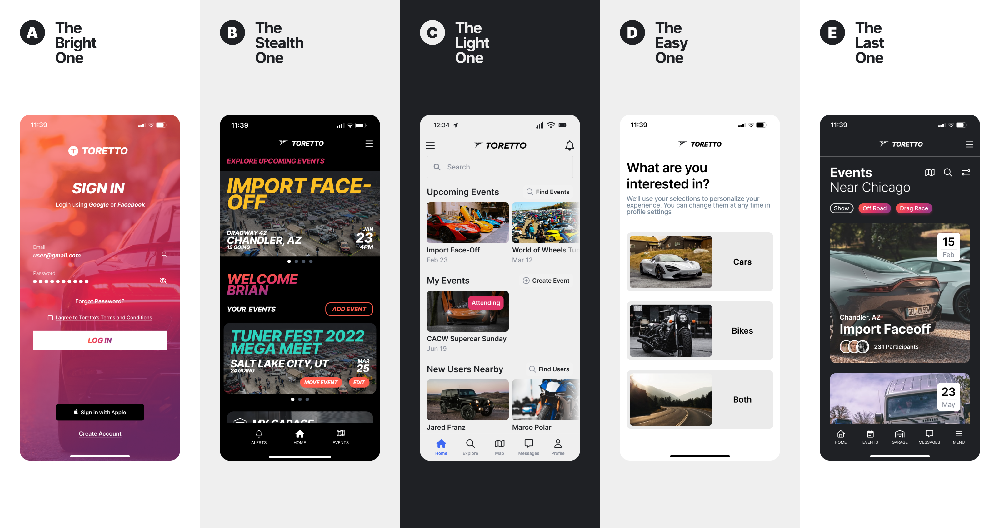
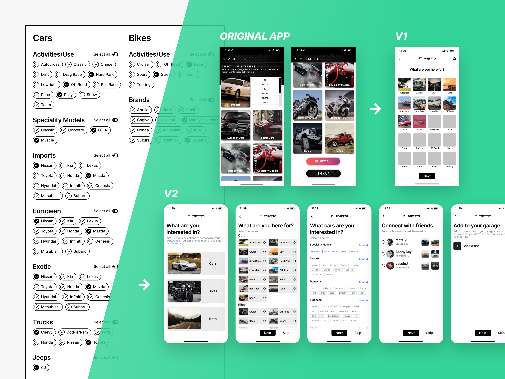
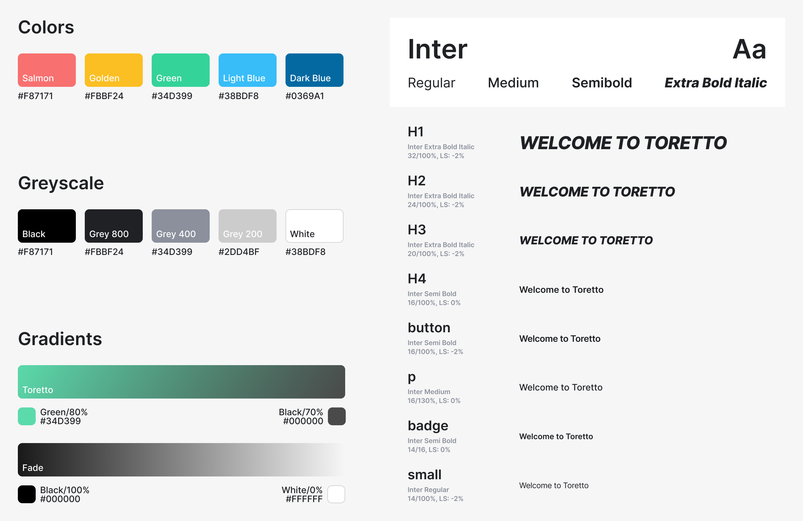

Redesigning A Car Enthusiast Mobile App

Creating a unique UI and upgrading the UX of an existing consumer app
Creating a unique UI and upgrading the UX of an existing consumer app
Our client came to us with an existing app that they wanted to update. Changes that fell within scope were a complete UI redesign and basic UX improvements that didn’t distrupt the underlying data structure.
I worked as the lead designer along side one other experienced designer. I did the majority of the work and created most of the final deliverables and assets.
We started by taking an audit of the existing app. Then we did a competitive analysis, created a list of possible improvements to the app, did a branding/UI exploration, created prototypes, and finally, tested with a group of existing users.
One of the clients main requests was a complete restyling of the app. We explored a few different options and got feedback from real users during a preference test. Elements from several of the exporations made it into the final design.
The existing onboarding experience only allowed selection of activities and brands you’re interested in. It was functional, but the interation design was a little cumbersome. Through an analysis of the interests data and some iteration on new design patterns, we created a new onboarding flow that steps the user through a series of easy questions and has the added functionality of letting the user connect with friends already on the app and immediately add cars to their garage.
The Toretto brand’s unique colors, styles, and typeface.
Our designs were handed over to engineering and the app was updated with our designs. The app is on the Apple App Store and available for download.